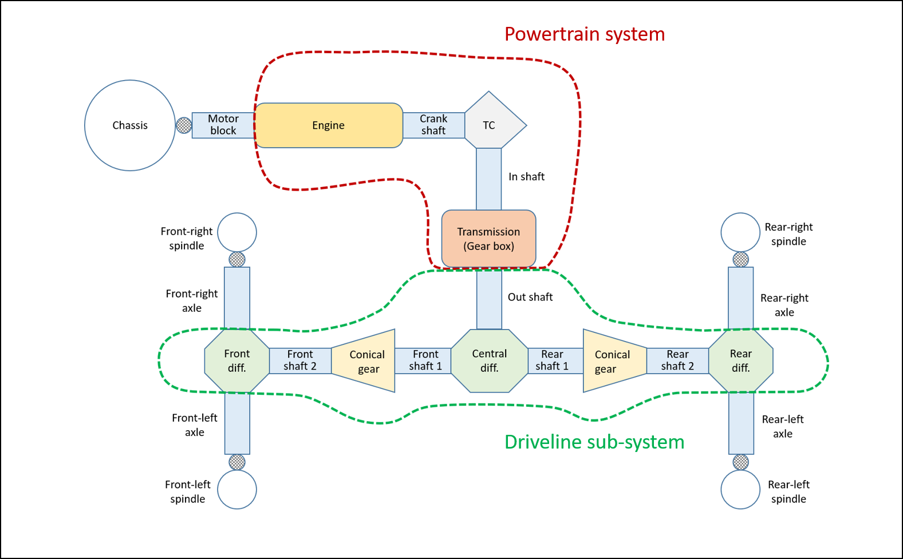

传动系统模型
四轮轴传动系统
该传动系统模板使用各种 Chrono 1-D 轴元素 ( ChShaft ) 和专用轴连接元素建模。这些元素用于建模差速器 ( ChShaftsPlanetary )、锥形齿轮 ( ChShaftsGearboxAngled ) 和差速锁离合器 ( ChShaftsClutch )。
参见 ChShaftsDriveline4WD 和 ShaftsDriveline4WD 。
下图显示了基于轴的 4WD 传动系统与基于轴的动力传动系统模型的连接。

以下示例 JSON 规范文件说明了基于 4WD 轴的传动系统可用的各种模板参数：
{
"Name": "HMMWV AWD Driveline",
"Type": "Driveline",
"Template": "ShaftsDriveline4WD",
"Shaft Direction":
{
"Motor Block": [1, 0, 0],
"Axle": [0, 1, 0]
},
"Shaft Inertia":
{
"Driveshaft": 0.5,
"Front Driveshaft": 0.5,
"Rear Driveshaft": 0.5,
"Central Differential Box": 0.6,
"Front Differential Box": 0.6,
"Rear Differential Box": 0.6
},
"Gear Ratio":
{
"Front Conical Gear": 0.2,
"Rear Conical Gear": 0.2
},
"Axle Differential Locking Limit": 100,
"Central Differential Locking Limit": 100
}
基于双轮轴的传动系统
该传动系统模板类似于基于 4WD 轴的传动系统模型，但只能驱动与单个车轴相关的车轮。该车轴是任意的，因此该传动系统模型可用于模拟前轮驱动和后轮驱动车辆。
参见 ChShaftsDriveline2WD 和 ShaftsDriveline2WD 。
具有 2WD 轴传动系统规范的示例 JSON 文件是：
{
"Name": "HMMWV RWD Driveline",
"Type": "Driveline",
"Template": "ShaftsDriveline2WD",
"Shaft Direction":
{
"Motor Block": [1, 0, 0],
"Axle": [0, 1, 0]
},
"Shaft Inertia":
{
"Driveshaft": 0.5,
"Differential Box": 0.6
},
"Gear Ratio":
{
"Conical Gear": 0.2
},
"Axle Differential Locking Limit": 100
}
四轮运动传动系统
此模板可用于为 4WD 传动系统建模。它使用恒定的前/后扭矩分配（0 到 1 之间的值）和 Torsen 限滑差速器的简单模型。
参见 ChSimpleDriveline 和 SimpleDriveline 。
具有 2WD 轴传动系统规范的示例 JSON 文件是：
{
"Name": "HMMWV 4WD Driveline",
"Type": "Driveline",
"Template": "SimpleDriveline",
"Front Torque Fraction": 0.5,
"Front Differential Max Bias": 2.0,
"Rear Differential Max Bias": 2.0
}
X 轮运动传动系统
此简单传动系统模板可用于模拟 XWD 传动系统，可驱动一个或多个车轴。它使用根据驱动轴数量确定的恒定扭矩分配和 Torsen 限滑差速器的简单模型。
参见 ChSimpleDrivelineXWD 和 SimpleDrivelineXWD 。
具有 2WD 轴传动系统规范的示例 JSON 文件是：
{
"Name": "MAN 5t, 7t, 10t XWD Driveline",
"Type": "Driveline",
"Template": "SimpleDrivelineXWD",
"Differential Max Bias": 2.0
}